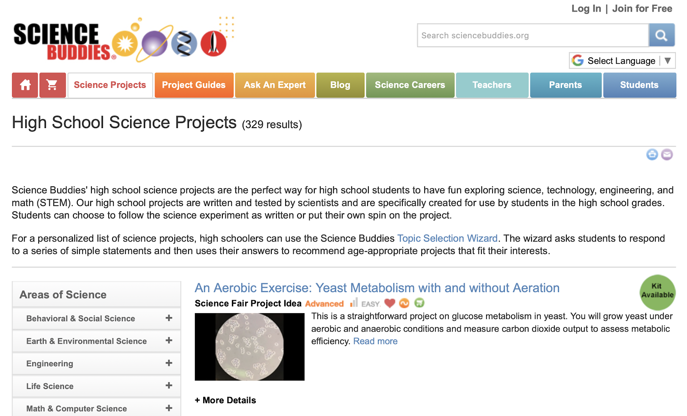
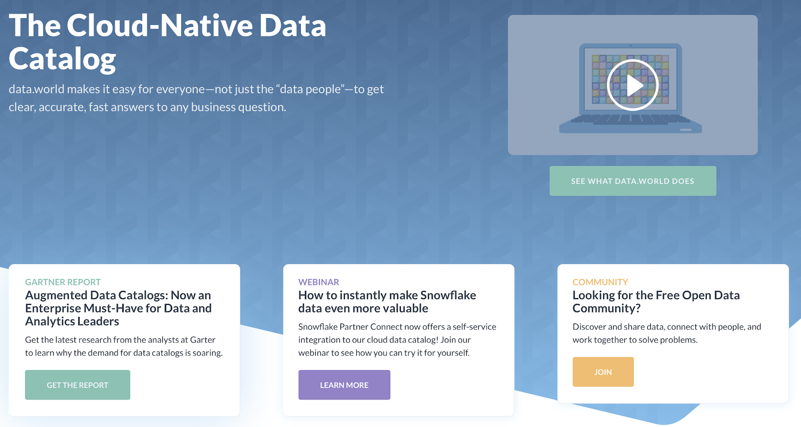
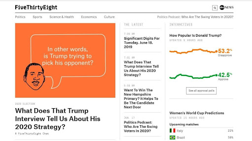
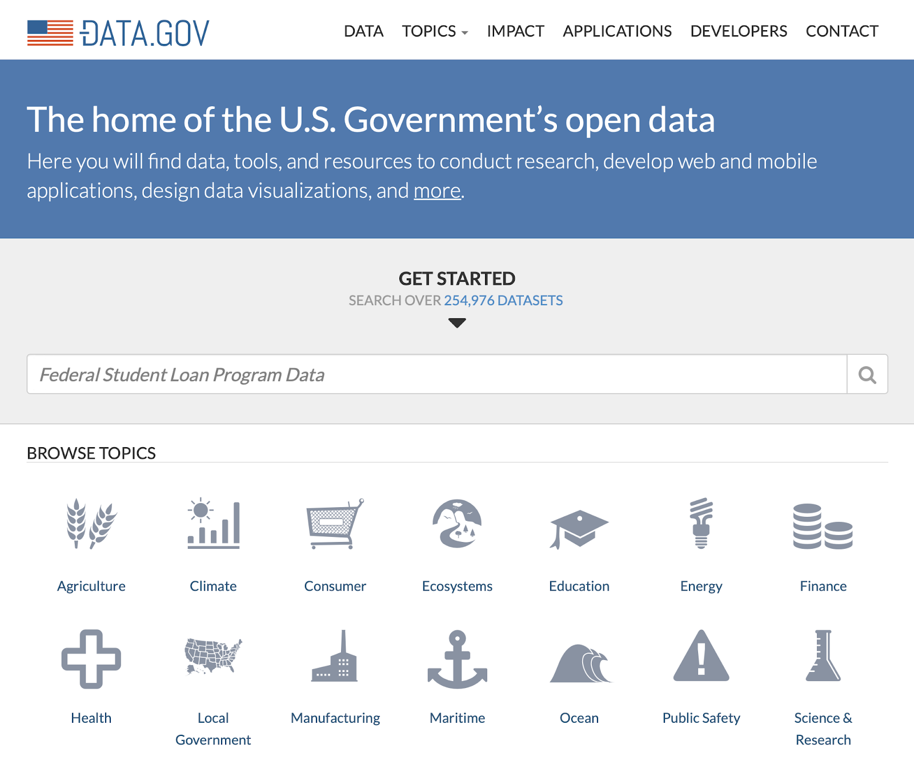
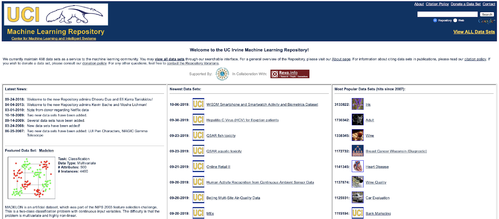

In my view, learning data science is a journey full of fun and challenges. Along this journey, you’ll feel satisfied when you plot some really good visualizations, but sometimes you’ll also get frustrated when facing an error message. You will get more and more mature when you fix the error message one by one, and at that time you’ll find yourself upgrade to another level, not just thinking about getting results, but achieving in a more neat, succinct and elegant way.
Of course, before writing codes, you need to have an idea first. That’s another aspect you have to improve yourself in: tell a story. You need to know what kind of story your audience wants or needs to listen to, and then you design your story based on their needs and demands.
With this data science technique, you are able to unlock the door of many fields, like bioinformatics studying gene code, neuron science focusing on human’s brain, or archeology studying the origin of human beings. Sounds cool right? Before you are qualified to do research with your university professor, let me introduce some methods in which you can play with dataset from various topics and publish your result to the world.
1. Build your own website
Example: http://jimjoel.net
Through the courses on sun’s landscape, you are able to build your own website, host it and display your data analysis results within just a page, a dashboard, using AWS service. That’s basically the most convenient way to show your work to others as long as there is Wi-Fi connection. Both AWS and dashboard are in the course list.
AWS is a powerful cloud service. Whether you're looking for compute power, database storage, content delivery, or other functionality, AWS has the services to help you build sophisticated applications with increased flexibility, scalability and reliability. While dashboards are a collection of widgets that give you an overview of the reports and metrics you care about most. Dashboards let you monitor many metrics at once, so you can quickly check the health of your accounts or see correlations between different reports. Dashboards are easy to create, customize and share.
2. Science Fair
Example: https://www.sciencebuddies.org/science-fair-projects/project-ideas/high-school
Pursuing an independent science, math, or engineering project during high school makes for a unique learning experience, and entering a project in one or more of the advanced competitions, which are akin to the Super Bowl or to the Academy Awards, offers you guys the opportunity to obtain even more. Perhaps foremost, succeeding in the top high school competitions creates a point of distinction and differentiation on college applications. For example, the 2005 Intel Science Talent Search (now the Regeneron Science Talent Search) Finalists ended up attending these colleges:
| College | Number of Attendees |
| Harvard | 10 |
| Princeton | 6 |
| MIT | 4 |
| Caltech | 4 |
| Stanford | 2 |
| Cornell | 2 |
| SUNY | 2 |
| Duke, Yale, Columbia, UC Berkeley, Arizona, Johns Hopkins, Wesleyan | 1 each |
I am not saying that these finalists were accepted solely based on their Science Talent Search status; but rather, to emphasize that college admissions officers know that students who compete and receive recognition in the top science competitions have a set of skills that sets them apart from their peers, which is extremely helpful during the college admissions process. Also, showing your interest and determination towards a specific area by attending science fair will add points to your application.
3. Kaggle
Website: https://www.kaggle.com
Intro:
Kaggle, a subsidiary of Google LLC, is an online community of data scientistsand machine learning
practitioners. Kaggle allows users to find and publish data sets, explore and build models in a
web-based data-science environment, work with other data scientists and machine learning engineers,
and enter competitions to solve data science challenges.
There are over 19,000 public datasets and 200,000 public notebooks to conquer any analysis in no
time. Inside Kaggle, you’ll always find your interesting dataset sand codes.
Story: This high school kid taught himself to be an AI wizard
The platform recently passed 1 million members, a testament to what a hotbed the field of AI is. High up on the leaderboard is Mikel Bober-Irizar. He's currently No. 84 in competitions and No. 2 among "Kernel Masters." He's entered 39 competitions over the past year, recently placing second in a contest to develop an algorithm that can detect duplicate ads on the same platform.
"We wrote our own neural networks," explains Mikel. "They provide a set of training videos, and you use that to train an algorithm that can then say on a new video, 'Oh this is Tag B'.... It's quite a lot of computation — the dataset itself was 8TB. That was a challenge."
Mikel would love to go on to a career in AI, though he first needs to graduate high school, let alone a university program. His dream schools: MIT, Berkeley, and Cambridge. And he's self-aware enough to know that, although he has aptitude and skills, there's still a lot he doesn't know about AI.
I believe that as long as you have interest, you can always find a way there.
4. Other ways to find dataset
4.1 Data.World: https://data.world
data.world is an undoubtedly excellent repository containing public datasets. The foremost reason why I appreciate this place and would recommend using it to others is a broad variety of data sets from multiple sources and for all purposes (finance, crime, economy, Twitter, NASA and more).
4.2 FiveThirtyEight: https://fivethirtyeight.com
FiveThirtyEight is one of the best places I would recommend. It’s a perfect mixture of significant storage of free data sets and great informative articles dedicated to Data Science. Frankly speaking, you can simply stop reading my post now and use only this website. But, actually, I’m kidding cause every place has its own features and possibilities (who knows).
4.3 Data.GOV: https://www.data.gov
Another site that is fast and simple — Data.gov is a large dataset aggregator and the home of the US Government’s open data. There are 14 different topics (from agriculture, public safety, to local government) so you have high chances to select data set that will be really interesting for you. What is more, this is a great site for data-driven journalism and story-telling.
4.4 Reddit: https://www.reddit.com/r/rdatasets/
Everyone knows Reddit as a popular social news site, but there is also a section devoted to sharing interesting data sets. Such discussion boards are called subreddits, or /r/datasets — a place to share, find and discuss datasets. The scope and quality of these data sets vary a lot since they’re all user-submitted, but they are often very interesting and nuanced.

4.5 UCI Machine Learning Repository: https://archive.ics.uci.edu/ml/index.php
UCI Machine Learning Repository is clearly the most famous data repository. It is usually the first place to go if you are looking for datasets related to machine learning repositories. The datasets include a diverse range of datasets from popular datasets like Iris and Titanic survival to recent contributions like that of Air Quality and GPS trajectories. The repository contains more than 350 datasets with labels like domain, the purpose of the problem (Classification / Regression). You can use these filters to identify good datasets for your needs.
